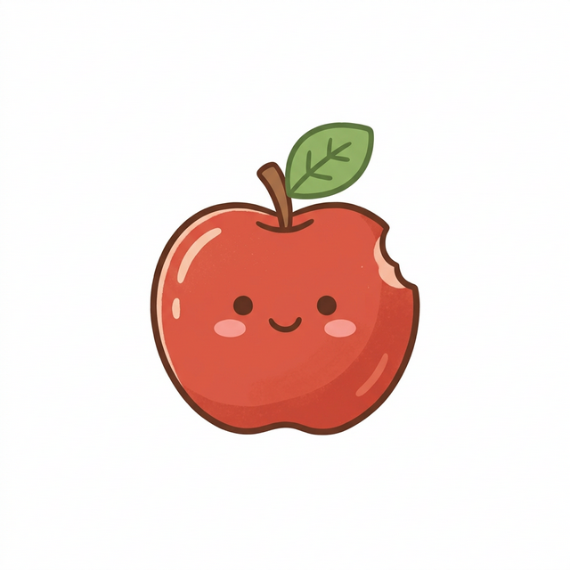
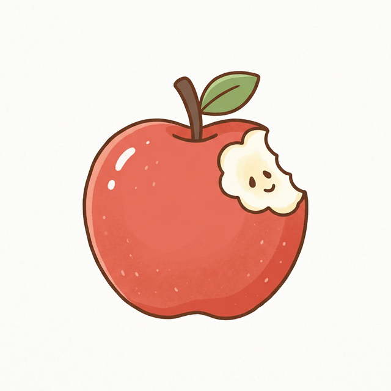
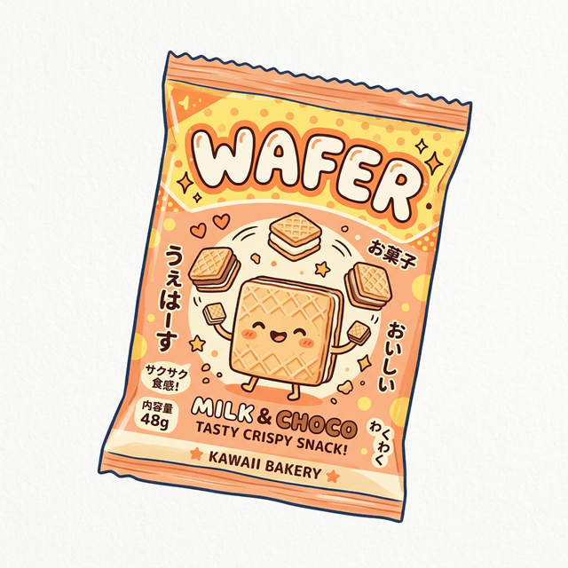
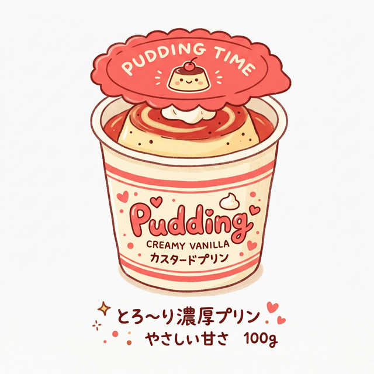
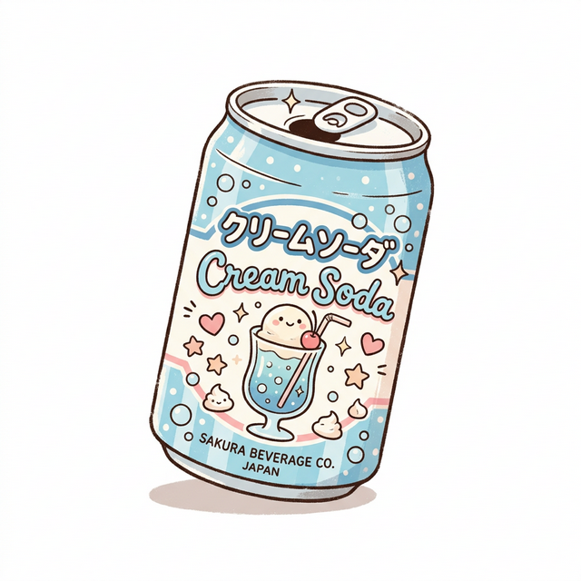
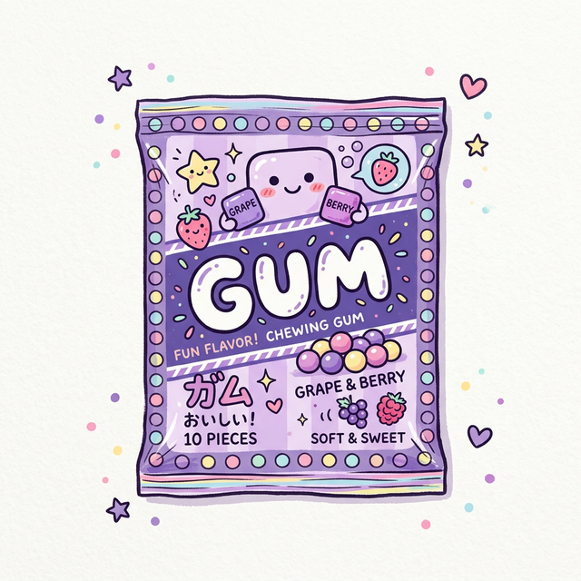
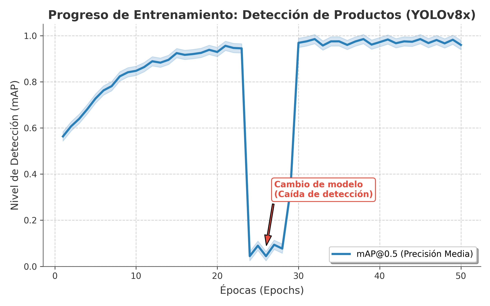
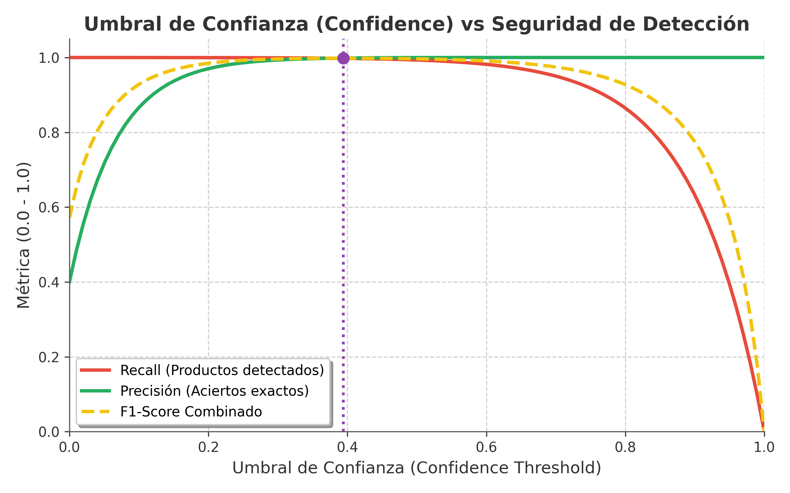

Vision Computacional
Clasificacion +
Regresion + Clustering
Creamos un sistema que usa camaras de vigilancia conectadas a una Raspberry Pi 5 para contar automaticamente los productos en los estantes de una tienda. La IA ve los productos, los cuenta y actualiza el inventario sin que nadie tenga que hacerlo a mano.
Cambiamos el "cerebro" de nuestro sistema. Antes usabamos dos modelos que no eran compatibles con nuestro hardware. Ahora usamos YOLOv8x, que funciona perfecto con la Raspberry Pi y su chip de IA Hailo-8L.
Creamos un sistema que detecta absolutamente todos los productos en el estante, incluso los que estan en sombra o mal iluminados. Funciona en 4 pasos:
Corrige la iluminacion automaticamente para que los productos oscuros se vean claros.
Analiza la imagen a 960 pixeles con sensibilidad al maximo para no perder ningun producto.
Convierte lo que detecta (ej: "bottle") a nombres que un empleado entienda (ej: "Botella/Bebida").
Calcula cuanto espacio ocupa cada producto, detecta zonas vacias y genera alertas.
En vez de confiar en un solo modelo, usamos tres modelos diferentes y combinamos sus respuestas. Es como pedir tres opiniones de expertos y quedarse con la mejor respuesta.
Teniamos un problema grave: el sistema confundia los productos. Unas papas las marcaba como cereal. Encontramos el error y lo arreglamos.
¿En qué parte exacta del proyecto aplicamos Clasificación, Regresión y Clustering? Aquí están los 3 puntos clave:
Construimos una tienda virtual en 3D con Three.js donde puedes ver las camaras funcionando en tiempo real. Todo el procesamiento corre en el borde, sin necesidad de servidores en la nube.
¿Cómo confirmamos que la IA va por buen camino? Durante el entrenamiento con nuestro dataset SKU-110K, evaluamos continuamente sus tasas de acierto y confiabilidad analizando sus curvas de aprendizaje y certeza.

Avances: A lo largo de las épocas, el modelo aumenta rápidamente su nivel de detección (mAP), estabilizándose por encima del 98% en las versiones finales, aprendiendo a ver todos los items posibles.

Certeza Máxima: La curva muestra un "Recall" altísimo con nuestro umbral óptimo (0.42). Esto significa que no se pierde de ver casi ningún producto (recall) aunque le subamos la certeza requerida.
Equipo Bisontitos
Samsung Innovation Campus 2026
"Demostramos que la tecnología no siempre se trata de inventar algo nuevo, sino de aplicar la tecnología donde realmente importa."